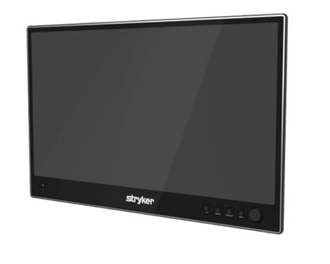
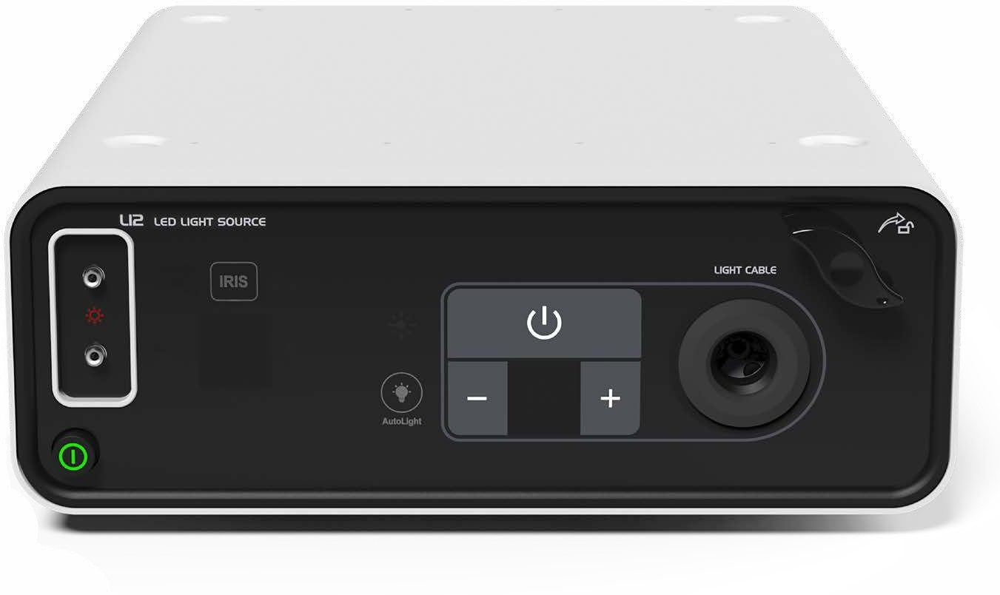
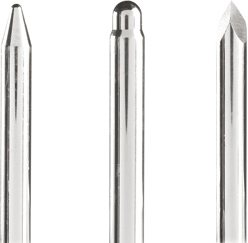
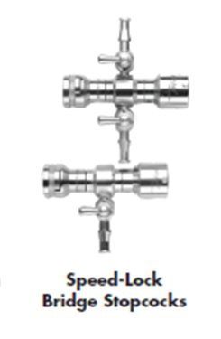
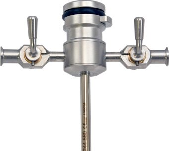
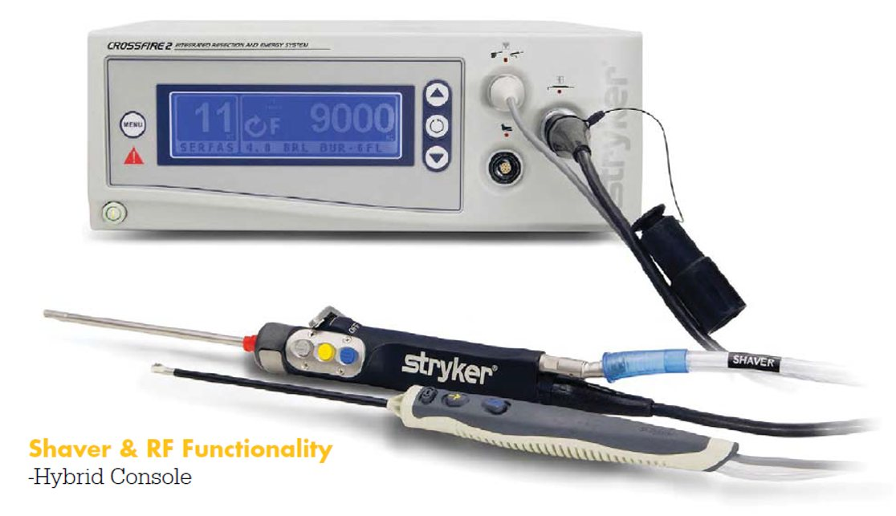
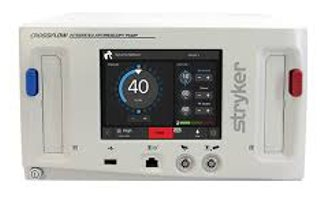
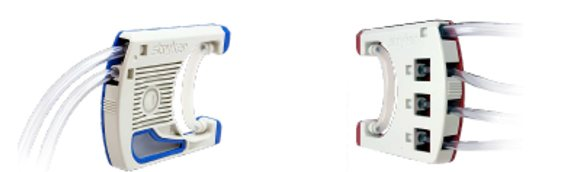
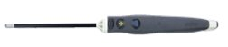

1788 ATH, 선택해야 하는 5가지 이유
Hip에서 두각, 전 OS(Orthopaedic Sports) 파트로 확장 — 영상 · Hip 특화 · 통합 · 범용 · 신뢰
110-bit 4K
Tone Mode · HDR — 눈부심 없이 Posterior까지 선명하게
2Hip 특화 구성
4K Eyepiece Long Scope (165 mm) · Bridge Cannula · Hip Length RF
3X-Series 통합
CrossFire 2 (Shaver · RF) × CrossFlow (In/Out Flow · Remote Wash · 온도 컨트롤)
4전 관절 범용
Knee · Shoulder · Small Joint · Spine(UBE) — 기존 1688 호환 · ICG 확장
5Individual Unit
유닛별 내구성 · 국내 Technical Service Team · 빠른 Demo Backup




1688 → 1788 : 한 단계 진화한 4K
Camera · OLED Monitor — 이전 세대(1688 AIM) 대비 무엇이 좋아졌나 (Stryker 공식 비교 기준)
| 항목 (Feature) | 1688 AIM | 1788 |
|---|---|---|
| 색 표현 · Color | 기준 | 62.5배 (약 10억 색 · 10-bit) |
| 센서 감도 · Sensitivity | 기준 | 향상 |
| 명암 · Black level | 기준 | True Black · 고대비 |
| HDR | — | Full Frame HDR |
| Tone Mode | — | 8단계 Posterior 조절 |
| 카메라 헤드 제어 · Camera head control | 기본 | Device · Voice Control |
4K 32" OLED: 자체 발광 픽셀 — 백라이트 없이 깊은 블랙. 수치는 Stryker 공식 자료 기준이며 사용 환경에 따라 체감은 다를 수 있습니다.
Tone Mode: Custom to You
Anterior의 눈부심 없이 Posterior의 어두운 부분까지 — 8단계로 직접 조절
Tone Mode
Posterior 밝기를 끌어올리는 1788 영상 기술 + 10-bit 4K · HDR
왜 필요한가
Anterior 디테일은 그대로, Posterior까지 — 특히 작은 직경 스코프에서 유용합니다.
어떻게 쓰나
8단계 Tone Mode Level — 술자가 Posterior 밝기를 직접 조절.
Fogging: 일체형 Camera Head
1788 AIM 4K Camera Head with Integrated Coupler (1788-610-122i) — Coupler · Camera Head 일체형으로 내부 습식 내구성 강화
| 구분 | 분리형 (Conventional) | 일체형 (1788 Integrated) |
|---|---|---|
| 구조 | Scope → Coupler → Camera Head | Scope → Camera Head + Coupler |
| 광학 결합부 | 2곳 | 1곳 |
L12 — Defog
광원에 Defog · Safelight 기술 탑재
VIP Dehazing
실시간 영상 보정 — Fluid 속에서도 선명하게
재설계 광학
신뢰성 · 내구성 강화
Source: Stryker 2024 Endoscopy Product Guide (1788-610-122i) · 1688 4K Camera System IFU · 1788 Arthroscopy one-pager.
HIP Arthroscopy: 4K Long Scope × Bridge Cannula
깊은 관절은 더 멀리 보고, 좁은 공간에서는 더 자유롭게 — Hip 술기에 맞춘 1788 ATH 구성
Precision 4K Eyepiece Long Scope
| Diameter | Working Length | Viewing angle | FOV |
|---|---|---|---|
| Ø 4.0 mm | 165 mm | 0° · 30° · 70° | 105° |
- Standard 140 mm 대비 +25 mm — 깊은 Hip 관절까지 여유 있는 도달
- Eyepiece 타입 — 1788 4K Coupler · 기존 1688 AIM 4K Coupler 모두 연결
- 전용 5.8 mm Long Cannula · Trocar · Obturator Set
Bridge Cannula
Working ⇄ Viewing 포털 간 Scope·기구 전환을 간편하게 — 반복 재삽입 부담을 최소화하여 술기 흐름을 유지하고 시간을 단축합니다.




X-Series: CrossFire 2 × CrossFlow
Shaver · RF · Fluid를 하나로 — 1788 ATH 타워를 완성하는 통합 관절경 시스템
CrossFire 2 · Shaver & RF Hybrid Console
- Shaver + RF 하나의 콘솔 — 기구 전환이 빠르고 간결
- 단일 풋스위치로 Shaver · RF 통합 제어
- 술자별 설정 저장 — 케이스마다 재설정 불필요
- Shaver 최대 12,000 RPM
CrossFlow · Inflow / Outflow Pump
- Inflow / Outflow 통합 관리 — 관절별 압력·유량 프리셋
- Remote Control로 Wash 즉시 실행
- CrossFire 연동 온도 컨트롤 — 온도 상승 시 흡인·유량 자동 증가




→ CrossFire 2 · CrossFlow · SERFAS · Burs/Cutters 상세 페이지
Small Joint Line-up
CrossFire 2 하나의 콘솔로 Hip(Long) · Standard · Small Joint 프로브와 소관절 스코프까지
| Eyepiece Small Joint Scope | 1.9 mm | 2.3 mm | 2.7 mm |
|---|---|---|---|
| View | 0° · 30° | 0° · 30° · 70° | 0° · 30° · 70° |
| Working Length (WL) | 58 mm | 72 mm | 75 / 120 mm |
| FOV | 65° | 80° | 80° / 105° |
HIP
깊은 Hip 관절 · Hip Length 프로브
STANDARD
Knee · Shoulder
SMALL JOINT
Wrist · Ankle · Elbow · Stubby Hardware
All Platform: Hip to Every Joint
Hip to Knee · Shoulder · Small Joint · Spine — 관절은 바뀌어도 타워는 하나
| Joint | Scope | Access | RF · Shaver |
|---|---|---|---|
| HIP | 4.0 mm 4K Eyepiece · 165 mm Long | 5.8 mm Long Cannula · Bridge Cannula | SERFAS Hip Length |
| KNEE | 4.0 mm 4K · 140 mm · 0° 30° 45° 70° | 5.8 / 6.5 mm Cannula · Inflow/Outflow | SERFAS Standard · Formula Shaver |
| SHOULDER | 4.0 mm 4K · 140 mm · 30° 70° | 5.8 / 6.5 mm Cannula · Inflow/Outflow | SERFAS Standard · Formula Shaver |
| SMALL JOINT | 1.9 / 2.3 / 2.7 mm Eyepiece SJ Scope | Stubby Hardware · Speed-Lock · J-Lock | SERFAS Small Joint · TPS Small Joint |
| SPINE | 4.0 mm 4K Scope | UBE 술기 대응 | CrossFlow 정교한 Inflow/Outflow |
공통 플랫폼
1788 4K Camera · Light Source · CrossFlow · CrossFire 2 + 기존 1688 호환 (Eyepiece Scope · 4K Coupler)
KOMISS · KOSESS · Cadaver Workshop
학회·카데바 워크숍 연계 교육 프로그램 (일정은 담당자 문의)
Service: 수리 중에도 수술은 계속
Individual Unit × 국내 Technical Service Team × Demo Backup
| All-in-one 통합형 | 1788 Individual Unit | |
|---|---|---|
| 이슈 발생 시 | 시스템 전체 점검·반출 | 해당 Unit만 교체 · Demo Backup |
| 수술 일정 | 영향 | 유지 |